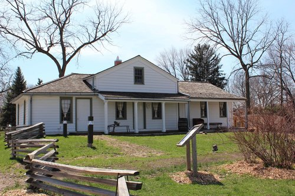
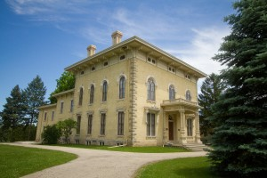

Joel Van Haaften's Website
Lombard Historical Museum Director
- Organized events that took place at the Sheldon Peck Homestead.
- Headed multiple preservation projects on historic buildings and structures.
- Helped develop materials that encouraged kids and older students to learn about history.
- Managed volunteers for events and presentations.

Visit these pages for more:
Rock County Historical Society Director
- Managed several restoration projects for the preservation of the Lincoln-Tallman House.
- Organized events that took place at the Lincoln-Tallman House.
- Created presentations to educate local service clubs and groups on the history of the Tallman House.
- Interacted with local educators to bring in field trips and other visits.

Visit these pages for more:
Haumerson's Pond
- Helped with the construction of the warming house at the site's location.
- Organizes community events to put on at the location.
- Part of Haumerson's Pond's Leading Committee
- Volunteers at most events put on by Haumerson's Pond.

Visit these pages for more:
Fort Atkinson School District Substitute
- Manages classrooms from Pre-K to High School Seniors.
- Entertaining to students of all ages.
- Most requested substitute by many teachers in the district.
- Shows students magic tricks, sign language, and creative puzzles.
Visit these pages for more: